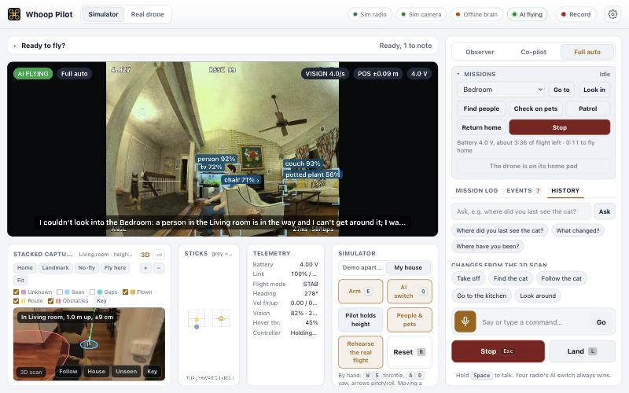
Whoop Pilot is experimental software for supervised FPV research on a Mac. Say “find the cat”, “look in the bedroom” or “go home”, and it plans a route through your house, steers around walls and furniture, and tells you what it saw.
Import your house → build the 3D map → set the home pad → rehearse in the simulator → record one flight by hand → calibrate the camera and check it → measure braking → your first mission in Co-pilot. Page 14 walks you through it.
Your Mac does the thinking. The radio does the flying. Your hands stay in charge.
About 20 minutes. Nothing to solder, nothing to buy. The full step-by-step is in the app: the Setup guide ↗ link.
Add an API key in Settings → Brain for real language understanding and picture checks. Without a key, a simple offline parser handles the basic commands and every mission still works. Your key stays in this browser and calls go straight to Anthropic.
The AI watches and talks, and never moves the drone. Good for checking what it sees.
You hold the height with the throttle and take off and land when it asks. The AI steers. Recommended starting mode; not a guarantee of safe flight.
The AI does everything, including take-off and landing. A whoop has no height sensor, so height comes from the camera. Only after two good Co-pilot flights.
Hold Space (or the mic button, or the radio’s SF button) and speak. Or type in the command bar and press Go. The chips above the bar are one-click examples.
| With your house loaded |
|---|
| “Go to the living room” |
| “Look in the bedroom” |
| “Find people” · “Check on the pets” |
| “Patrol the house” |
| “Come home” · “Land” |
| “Where are you?” |
| “Where did you last see the cat?” · “What changed?” |
| Anywhere |
|---|
| “Take off” |
| “Turn left 90” · “Move forward a metre” |
| “Look around and tell me what you see” |
| “Find the cat” · “Follow the cat” |
| “Stop” · “Land” |
Whoop Pilot uses the 3D capture of your house (from SiteSpec or Spacial) as its map and as a 1:1 simulator. It only ever flies through space the scan has actually seen.
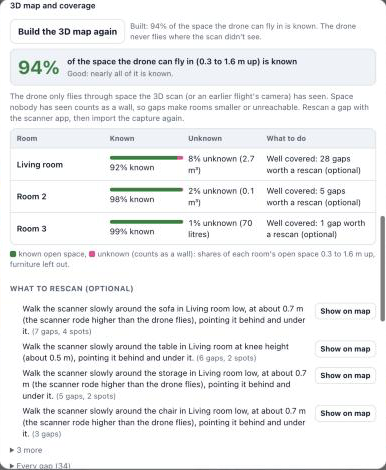
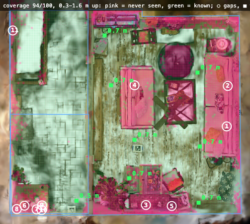
Gaps just make rooms a little smaller: the drone flies around them. To fill them, walk the scanner slowly around the furniture it names, held low (about 0.7 m: the drone flies lower than you carried the scanner), then import the capture again. Your edits (home pad, names, no-fly zones) are kept.
Every flight starts and ends here, and it’s how the drone learns where it is. Use the map’s Home tool: click the spot, drag to set the way the nose faces. Print the pad mat from the setup guide and tape it there, arrow matching the map.
Claude looks at pictures of your 3D scan, room by room, and suggests room names, places you can send the drone to (“the sofa”) and hazards for a small drone (hanging lamps, plants, cables, glass) as no-fly zones. Nothing changes until you accept it.
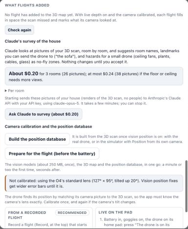
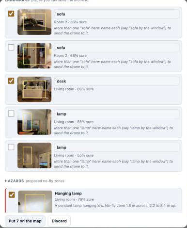
By hand in the simulator: E arm · Q AI switch · WS throttle · AD yaw · arrow keys pitch and roll.
| Go to | Flies to the room or place picked in the list. |
| Look in | Stops at the doorway, looks around, reports who and what is there. |
| Find people | Searches room by room until everyone is found. |
| Check on pets | Visits the rooms to find the cat and the dog. |
| Patrol | Every room, then home. Alerts you about people and changes. |
| Return home | Back to the pad and lands. |
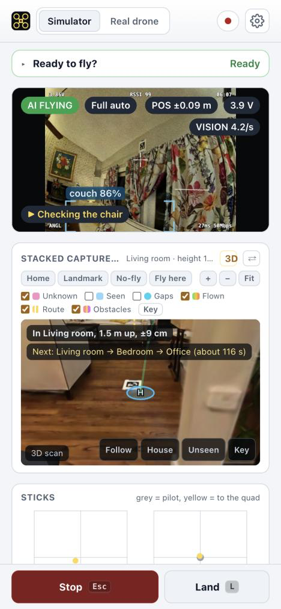
The drone always says why it’s slow, holding or landing: on the video and in the mission log.
| You see | What it means, and what to do |
|---|---|
| NO POSITION · SET ON PAD | It doesn’t know where it is. Land, put it on the pad, press The drone is on its home pad. |
| POSITION LOST · HOLDING | It holds still and asks for help (Co-pilot) or lands where it is (Full auto). |
| NO VISION FIX · VISION DISAGREES | The camera can’t place itself right now. It slows down and turns toward a view it recognises. |
| flying slowly: no live depth yet | It’s being careful until its depth estimate starts. Not stuck. |
| Holding back: a person is close | It keeps 1.5 m from people. It waits, then finds another way or gives up politely. |
| Waiting for live depth to start before I fly on | A few seconds after a Full-auto take-off. If depth never starts, it lands on the pad. |
| The way home is blocked (…) | It takes a closer look, tries again with more room, and otherwise lands on the nearest clear spot and says where. |
| The battery is too low for that | It flies home and lands. |
| The video is too slow for me to fly by. Please take over and land. | Take the sticks and land. |
| 1 possible change · check | Something the scan doesn’t have. Tap it to see the two pictures and decide (page 12). Until then it flies around it. |
The real drone flies at most 0.3 m/s until you measure its braking, 0.4 m/s after, and 0.22 m/s whenever its live depth can’t see. Slow is deliberate: it is a 36 g drone indoors.
Turn layers on and off under the map, and press Key for the legend. Press 3D to fly the view around your scan.
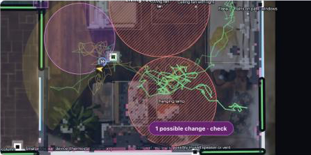
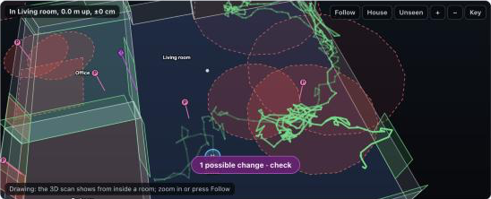
The drone icon, with a ring showing how sure it is: yellow when sure, orange when unsure, red when lost.
The trail, kept for every flight, with ✕ where it lost its position. Replay any old flight from History.
The route line through the doors to its goal, redrawn whenever it has to go around something.
| Unknown | Never seen by the scan: never flown through. |
| Seen | What the drone’s camera has looked at. |
| Gaps | Spots worth a rescan. |
| Flown | The trail: where it has been. |
| Route | The planned path: where it will go. |
| Obstacles | People, new things, possible changes. |
Home sets the pad · Landmark names a place · No-fly draws a zone · Fly here sends the drone · + − Fit zoom · ⇄ swaps the map and the camera view.
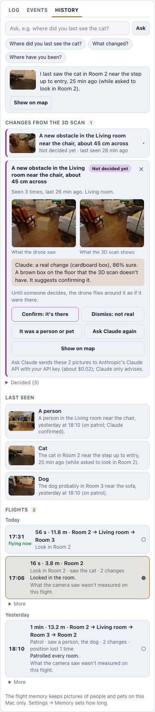
The History tab is the drone’s memory of your house.
Type a question or tap a suggestion: “Where did you last see the cat?”, “What changed?”, “Where have you been?”. It answers from what it actually saw, and Claude can use the same memory.
People, the cat, the dog and named things, with a picture, the room and when.
Every flight: time, distance, rooms, findings. Click one to replay its trail on the map and in 3D.
Each possible change shows what the drone saw next to what the scan shows, and what Claude thinks if you allowed it to look. Then you decide:
| Confirm: it’s there | Added to the map for good. The drone avoids it. |
| Dismiss: not real | Forgotten. The drone flies there again. |
| A person or pet | Not a change. It was just someone passing. |
| Ask Claude again | A second opinion, about $0.02. |
You can do this mid-flight too: tap the change on the map or the button on the video.
History is stored locally. AI commands, approved checks and surveys can send images to Anthropic. Settings → Memory sets how long, and can delete pictures or whole flights.
In Real drone mode this checklist opens first. Red items stop missions; orange ones are warnings. Most have a button that fixes them.
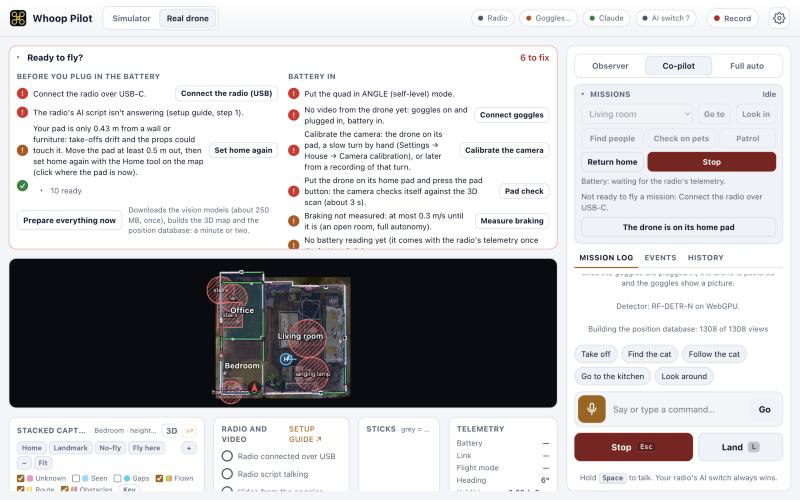
Three short packs, in this order. With every new battery: drone on the mat, then press The drone is on its home pad.
Import the house and build the 3D map. Set the home pad and tape the mat down. Rehearse Look in and Return home in the simulator. Switch to Real drone and press Prepare everything now. Tidy the floors, lights on, people and pets out. Charge 3 batteries and the goggles.
Settings → House → Camera calibration → From a recorded flight → Calibrate from it → Save it. Then Settings → Recordings → Check localization. It passes with at least 3 fixes a second, never lost, and landing within 10 cm of the pad. Don’t go on until it passes. If it fails, the report says why in one line.
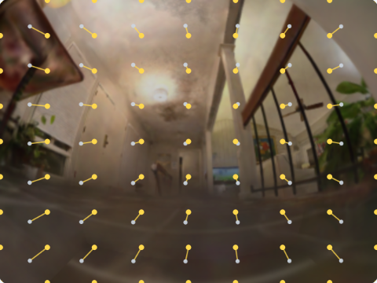
Then try one short Look in in Full auto, over carpet, nobody else in the room, thumbs on the sticks. Watch the height most: it comes from the camera.
| The app says | Do this |
|---|---|
| Connect the radio over USB-C · The radio’s AI script isn’t answering | Plug the radio in, press Connect the radio (USB). USB-VCP must be LUA and the Mixer Script added (page 4). |
| Put the quad in ANGLE (self-level) mode | Flip your flight-mode switch to ANGLE. |
| No video from the drone yet · Still finding the camera picture | Goggles on and plugged in, battery in, wait a few seconds. Set the O4 to 4:3 if it says the shape is wrong. |
| Your pad is only … m from a wall or furniture | Move the mat somewhere more open and press Set home again. |
| Calibrate the camera · Put the drone on its home pad | Steps C and D of the first flight. |
| Battery in for …: about … before the O4 overheats | Hurry, or unplug and let it cool for a few minutes. |
| The computer is too busy to fly safely | Close other tabs and apps. |
| No position fix from the camera in the last second | Let the camera see the room, not a blank wall. Or land, put it on the pad and press the pad button. |
| Braking not measured: at most 0.3 m/s | Fine as it is, or do step D. |
| Server not running | Double-click start.command. If it complains, install Node.js (brew install node). |
| No goggles on USB | Use a data cable, goggles on, OTG Wired Connection off. |
| The goggles don’t answer | Drone powered and linked; goggles awake (wear them or cover the sensor); not in Real View or the album; Share Liveview on. |
| Connected, but no picture | Power the drone and check the goggles show its camera. |
| Goggles went quiet | Nothing to do: the app reconnects by itself. |
Claude is the drone’s brain for language and a second pair of eyes. You stay in control of what it sees and what it costs.
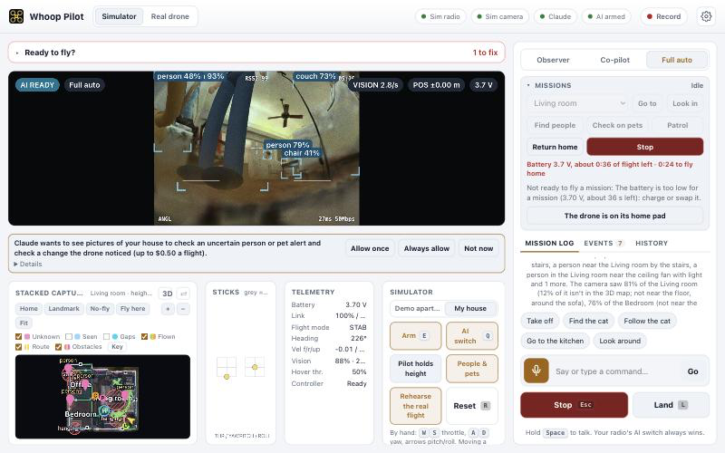
Allow once · Always allow · Not now · Never. Change it any time in Settings → Brain: picture checks Ask (default), On or Off.
| A voice command | usually under a cent (prompt caching) |
| A change check | about $0.02 |
| The house survey | about $0.20 for 3 rooms, shown first |
| Per-flight cap | $0.50 by default (Settings → Brain) |
The log shows the cost of every call, split into voice commands, picture checks and memory questions.
Your API key lives only in this browser. Calls go straight to Anthropic. Claude only advises: the planner and safety layer decide how the drone moves.
| Any stick | that axis is yours at once |
| AI switch SD up | you fly everything |
| Esc / Stop | stop the mission |
| L / Land | land now |
| Space (hold) | talk |
| E · Q | arm · AI switch (simulator) |
| WS · AD | throttle · yaw (simulator) |
| Arrows · R | pitch/roll · reset (simulator) |
| Go to the … | fly to a room or place |
| Look in the … | look into a room |
| Find people | search every room |
| Check on the pets | find the cat and dog |
| Patrol | every room, then home |
| Come home | back to the pad |
| What changed? | from memory |
| Flight time | about 3 minutes per sortie (4 min pack) | Pad clearance | 0.5 m wanted, 0.35 m minimum |
| O4 on the ground | about 2.5 min before it overheats | Distance from people | 1.5 m |
| Speed | 0.3 m/s · 0.4 after braking test | Claude budget | $0.50 per flight |